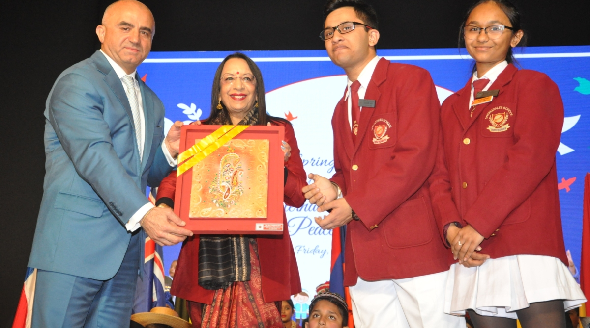

Places must visit
Auditorium
My auditorium is very big many events happen there like interschool competitions.
Ethos and Motto
Privately managed, the school is a secular co-educational one integrating into its curriculum concern for the environment, the spirit of community service and international peace and brotherhood.
Whats New
-
Mrs. Rajni Kumar retires as Founder Principal after 32 years of service.

Rajni Kumar is a British-born Indian educationist and the founder of Springdales Group of Schools. The Government of India honored her in 2011, with the fourth highest civilian award of Padma Shri.
-
Mrs. Jyoti Bose becomes Principal of the now full fledged Senior Secondary School at Dhaula Kuan.
Springdales Dhaula Kuan took birth in 1983 under the dynamic leadership ofMrs Jyoti Bose(nee Kiron Jyoti Kumar). A founder student of Springdales, she went on to do her Graduation and Post graduation in Sociology from the Delhi School of Economics and an M.Phil in the Sociology of Education from Delhi University.